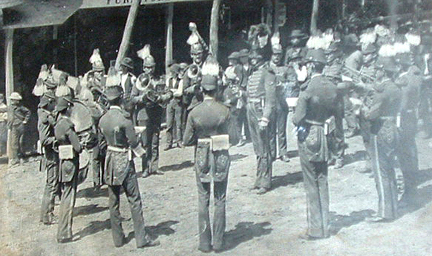

1851 - to present

© Columbia State Historic Park
Brass Band on Main Street - c1880s.
There were 13 Brass Bands in Columbia and the following is their history.
1851 Spring - The Columbia Brass Band along with 6,000 to 8,000 men escorted the first woman they had seen in months into their gaily decorated town.
1855 August - Wetterman, a transplanted Swedish bandmaster, was hired
to lead the band of the Lee and Marshall Circus which toured the mining camps twice that year.
1857 - the Columbia Brass Band led the May Day procession to Cole's Ranch near Sonora, and later, the Sonora (German) Brass Band under the direction of Prof. Schmitz, performed a concert with the Sonora Glee Club. Following the concert a ball began at 6:00 p.m. and continued until
four o'clock in the morning.
1858 November - Columbia Brass Band and the Faxon's Sonora Band led a procession in celebration of the opening of the flood gates of the new high flume ("A Grand Water Celebration"). The Columbians played for the ceremonies at the end of the procession.
1863 The Tuolumne Courier mentions the Columbia Cornet Band's performing Mozart, Beethoven, and Rossini "with great fidelity".
1864 the German Cornet Band of Columbia performed a concert for the benefit of the Episcopal Church.
1890 The Columbia Cornet Band (also know as "The Ice Cream Band") made a pilgrimage to Yo semite. They were the second band to visit the valley. While there, they played for dances and concerts.
